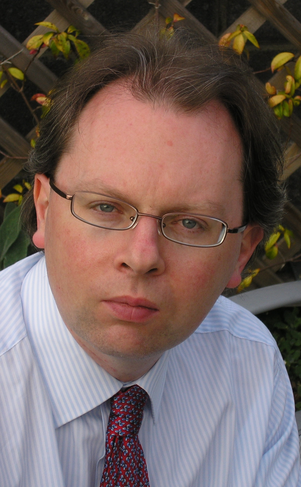

Dermot Cochran
|  |
Dermot Cochran graduated in 1992 from Trinity College Dublin with a primary degree in Mathematics and Computing. From 1992 to 1997 he developed software for Radio Frequency Engineering at Trinity College Dublin. He worked as a Senior Software Engineer in the Irish software industry from 1997 to 2007, first with Trintech developing Electronic Payment Systems and more recently as a Java developer with Curam Software. He graduated in 2003 with an MIE in Systems Engineering, and in 2007 with an MSc in Advanced Software Engineering, both from University College Dublin. His MSc dissertation was a formal specification of the Irish vote counting system using the Java Modeling Language (JML). After finishing his MSc he worked as a Research Software Engineer on the Mobius Program Verification Environment. In 2008 and 2009 he was a full-time PhD student in Software Engineering at the LERO Graduate School of Software Engineering (LGSSE). From 2010 to 2012 he was a PhD student at the IT University of Copenhagen. He defended his PhD in Fall of 2012. Thesis statement: Verified and Verifiable Computer Mediated Voting is appropriate for both National and International Elections |
MSc. Dissertation
Secure Internet Voting in Ireland Using the Open Source Kiezen op Afstand (KOA) Remote Voting SystemPublications
- Votail at FoVeOOS 2010, Paris, France.
- CLOPS: A DSL for Command Line Options at IFIP Working Conference on Domain Specific Languages (DSL WC), Oxford, 2009.
- Verification Centric Realization of Electronic Vote Counting Electronic Voting Technologies Workshop, 2007, Boston, Massachusetts.
- KOA Remote Voting System: A Summary of Work To Date Trusted Global Computing, 2006, Lucca, Italy.
- Formal Techniques in a Remote Voting System ACM SIGSOFT Software Engineering Notes, 2006.
Software
- Votail: A Formally Specified and Verified Ballot Counting System for Irish PR-STV Elections